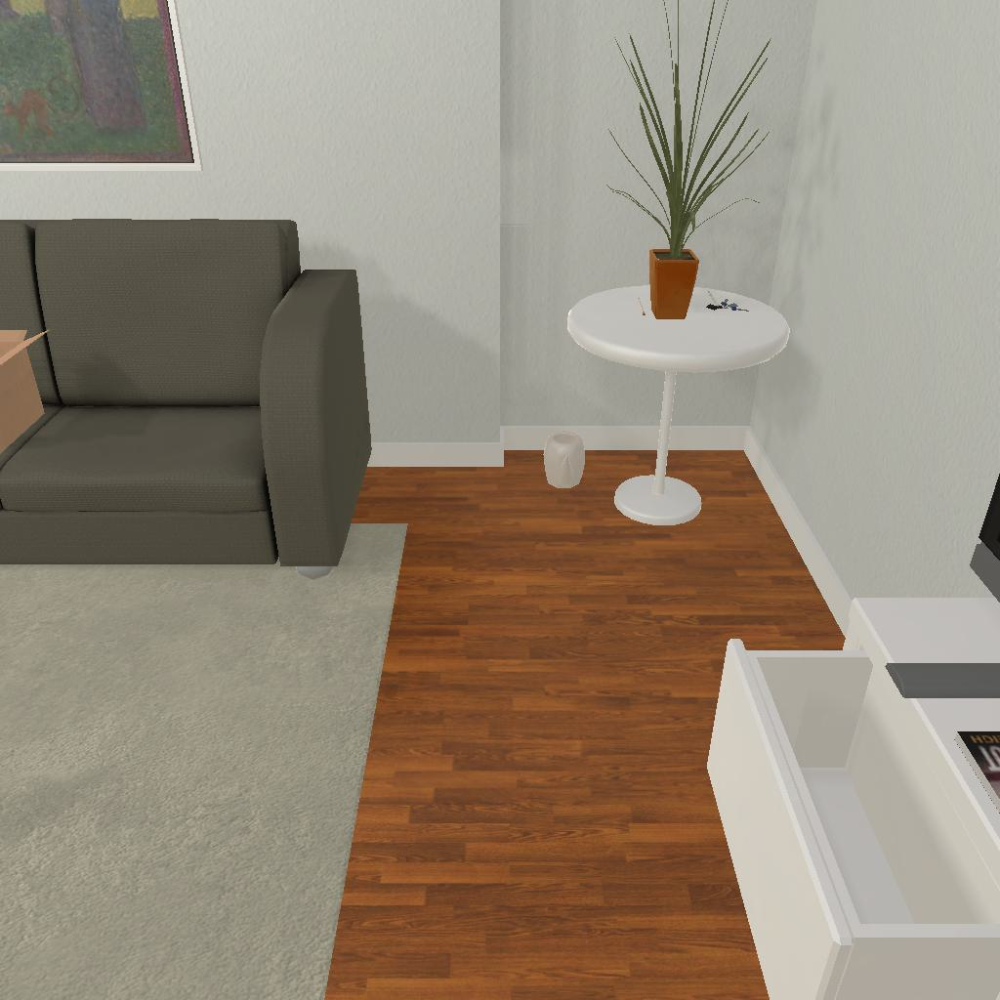

---------------------------------------------------------task: 5---------------------------------------------------------
--------------------------------------------------------------------------------------------------------------------------------------------------------------------
--------------------------------------------------------------------------------------------------------------------------------------------------------------------
Step:--------------------------------------------------------------------------19-------------------------------------------------------------------------------
----------------------------------------
VLM Prompt:
Image1:
Image2:
Image3:
**Instruction**
1. Analyze the provided images to identify all visible household objects and compare the difference between images (e.h. whether the object is opened or not and taken on hand or not), focusing on those relevant to the task description "put a book in armchair."
2. Use the analysis of images and the task hint "The agent must find an object of the desired type, pick it up, find the correct location to place it, and put it down there." to answer the question: what is the most reasonable action in the choices for the task description "put a book in armchair"?
3. Decide and write the answer using the template: The answer is: (i): , where i is the real number. If there is no desired object in images, search every place based on **Initial Observation** to find the object. And if no one is exactly correct, choose a similar answer.
**Initial Observation**
You are in the middle of a room. Looking quickly around you, you can see armchair (1), sofa (1), coffeetable (1), drawer (1-4), sidetable (1-3), dresser (1)
**Answer Choices**
(1): go to armchair 1
(2): go to sofa 1
(3): go to coffeetable 1
(4): go to drawer 1
(5): go to sidetable 1
(6): go to dresser 1
(7): go to drawer 3
(8): go to drawer 4
(9): go to sidetable 2
(10): go to sidetable 3
(11): open drawer 2
(12): close drawer 2
(13): examine drawer 2
**Answer**
Let's think step by step by following the instructions.
----------------------------------------
----------------------------------------
Original Response:
1. In all three images provided, we can see an armchair, a coffee table with a vase, and a part of what seems to be a white cabinet or dresser. There are no visible books or objects that could be a book on the armchair, coffee table, or in the immediate vicinity that can be seen in the images.
2. Based on the task description "put a book in armchair," the most reasonable action would be to find a book first. Since there are no books visible in the images, we must search other locations where a book might be found, such as drawers, side tables, or a dresser, as per the initial observation.
3. The images do not show any drawers or side tables open, so we cannot determine if there is a book inside them without further action. The task hint suggests that the agent must find an object of the desired type (a book), pick it up, find the correct location (the armchair), and put it down there.
Considering the above points and the initial observation that mentions multiple drawers and side tables as well as a dresser, the most reasonable action to find a book would be to start checking these storage spaces.
Since the answer choices do not include directly searching for a book, the next best action would be to go to the locations that might contain a book. Drawer 2 is specifically mentioned for opening, closing, and examining, which might imply it is of interest, but since we do not have specific information about where the book is, it would be best to check all possible locations systematically.
The answer is: (4): go to drawer 1. If no book is found there, the next actions should be to go to each of the drawers, side tables, and the dresser in turn until a book is found.
----------------------------------------
----------------------------------------
>>> Refine Original VLM Response and Get Pure Action: go to drawer 1
----------------------------------------
-----------------------------------------------------------------
Running time: 14.508146524429321 seconds
Total Money: 2.569780000000001
-----------------------------------------------------------------
-----------------------------------------------------------------
Text Observation:You arrive at loc 3. The drawer 1 is open. On the drawer 1, you see a houseplant 1, a television 1, a box 1, a book 1, a wateringcan 1, a keychain 1, a pencil 1, and a pencil 2.
-----------------------------------------------------------------
UNSUCCEED